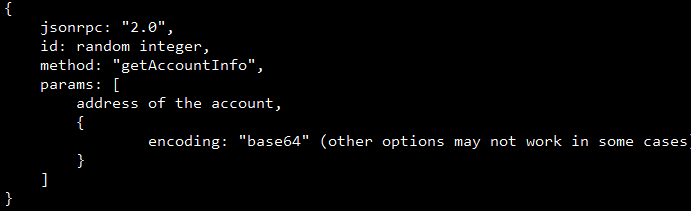
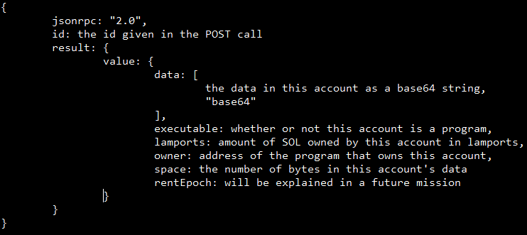

Congratulations!
After interrogating Nat Inter, the IMF found out that The Entity's source code is stored on a supercomputer.
The coordinates of this supercomputer are stored on the Solana blockchain.
On the Solana blockchain, data is stored in accounts. Accounts on Solana are like files on a computer.
Every file on a computer has a filename. Every account on Solana has an address.
Every file on a computer has a filesize. Every account on Solana has an account size.
Files on a computer and accounts on Solana both store data in bytes, which can be represented as a number between 0 and 255.
Solana accounts have unique traits as well.
Accounts on Solana have a balance of SOL.
Solana accounts are owned by on-chain programs. The program determines how data is stored in the account and how users can interact with it.
In fact, when getting the USDC-Dev balance in the previous mission, you were reading data stored in an account.
The location of the supercomputer is stored in the account with an address of 3WUo5THnH21vCbuYmMTgvqMHDgYvLQm4KDKRkRFwUCuo, in the 10th and 11th bytes. The 10th byte gives degrees of latitude, and the 11th byte gives degrees of longitude.
To get the data of a Solana account, include this body in a POST call to the same URL with the same header as in the previous missions.

The response will look like this:

You can use this site: https://cryptii.com/pipes/base64-to-hex or your programming language of choice to turn a base64 string into a list of numbers between 0 and 255. Remember to convert from hexadecimal to decimal!
Where is the supercomputer that holds The Entity's source code?